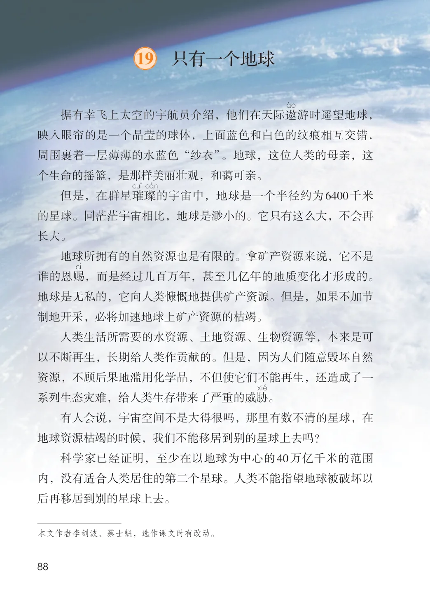
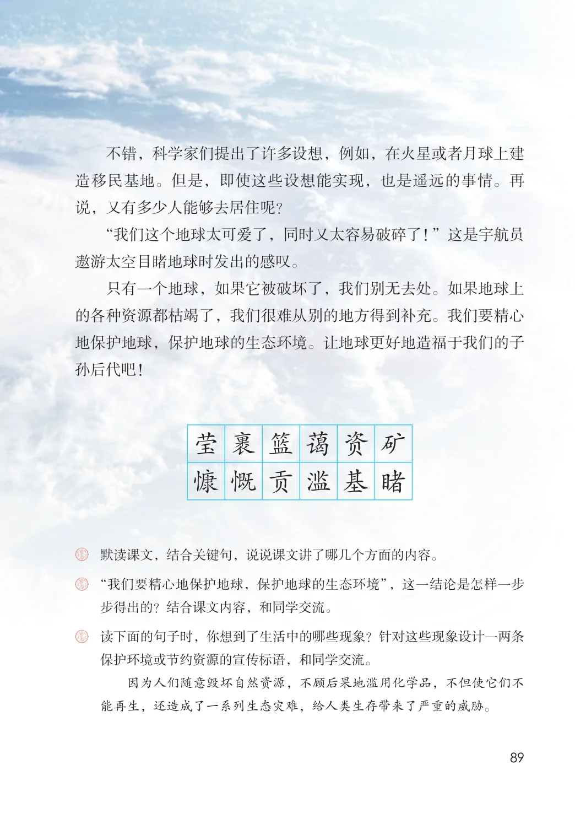

第六单元 · 第 19 课
只有一个地球
文字内容 PDF 第 93 页
据有幸飞上太空的宇航员介绍，他们在天际遨游时遥望地球，映入眼帘的是一个晶莹的球体，上面蓝色和白色的纹痕相互交错，周围裹着一层薄薄的水蓝色“纱衣”。地球，这位人类的母亲，这个生命的摇篮，是那样美丽壮观，和蔼可亲。
但是，在群星璀璨的宇宙中，地球是一个半径约为6400千米的星球。同茫茫宇宙相比，地球是渺小的。它只有这么大，不会再长大。
地球所拥有的自然资源也是有限的。拿矿产资源来说，它不是谁的恩赐，而是经过几百万年，甚至几亿年的地质变化才形成的。地球是无私的，它向人类慷慨地提供矿产资源。但是，如果不加节制地开采，必将加速地球上矿产资源的枯竭。
人类生活所需要的水资源、土地资源、生物资源等，本来是可以不断再生，长期给人类作贡献的。但是，因为人们随意毁坏自然资源，不顾后果地滥用化学品，不但使它们不能再生，还造成了一系列生态灾难，给人类生存带来了严重的威胁。
有人会说，宇宙空间不是大得很吗，那里有数不清的星球，在地球资源枯竭的时候，我们不能移居到别的星球上去吗？
科学家已经证明，至少在以地球为中心的40万亿千米的范围内，没有适合人类居住的第二个星球。人类不能指望地球被破坏以后再移居到别的星球上去。
文字内容 PDF 第 94 页
不错，科学家们提出了许多设想，例如，在火星或者月球上建造移民基地。但是，即使这些设想能实现，也是遥远的事情。再说，又有多少人能够去居住呢？
“我们这个地球太可爱了，同时又太容易破碎了！”这是宇航员遨游太空目睹地球时发出的感叹。
只有一个地球，如果它被破坏了，我们别无去处。如果地球上的各种资源都枯竭了，我们很难从别的地方得到补充。我们要精心地保护地球，保护地球的生态环境。让地球更好地造福于我们的子孙后代吧！
生字与词语
莹
裹
篮
蔼
资
矿
慷
慨
贡
滥
基
睹
课后练习
- 默读课文，结合关键句，说说课文讲了哪几个方面的内容。“我们要精心地保护地球，保护地球的生态环境”，这一结论是怎样一步
- 步得出的？结合课文内容，和同学交流。
- 读下面的句子时，你想到了生活中的哪些现象？针对这些现象设计一两条
- 保护环境或节约资源的宣传标语，和同学交流。因为人们随意毁坏自然资源，不顾后果地滥用化学品，不但使它们不能再生，还造成了一系列生态灾难，给人类生存带来了严重的威胁。
原版对照
原书页面与全部插图
点击图片可查看大图。

